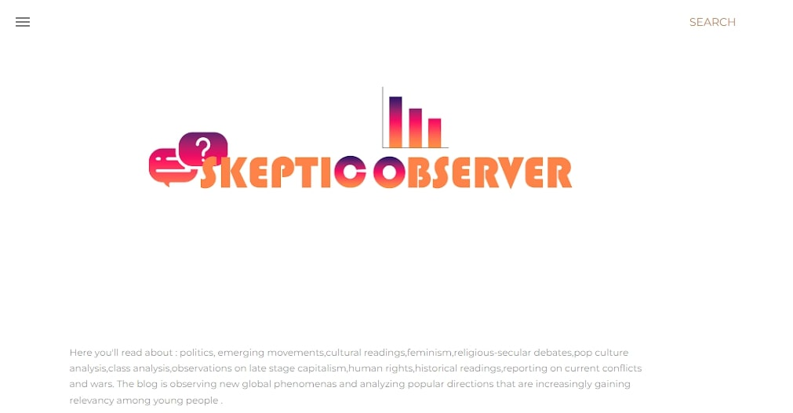
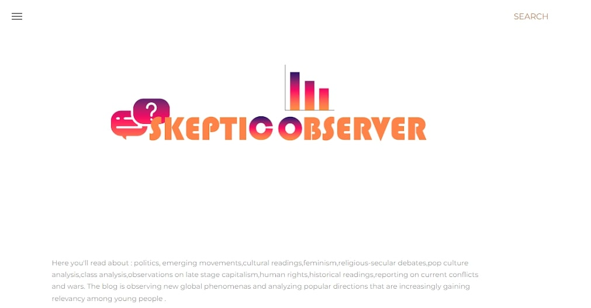

My Blogs
Skeptic Observer
i have started this blog as a way for me to comment on and analyze events in conflict zones and the imperial core , and then it sort of expanded into a general commentery on global trends and cultural shifts.

i have started this blog as a way for me to comment on and analyze events in conflict zones and the imperial core , and then it sort of expanded into a general commentery on global trends and cultural shifts.
